Getting Started with RiskOps
RiskOps is the discipline of treating risk management as a continuous operational process — not a quarterly audit. This course teaches you the end-to-end flow used in CloudSignals, the reasons each stage exists, and the exact navigation sequence to execute it in your tenant.
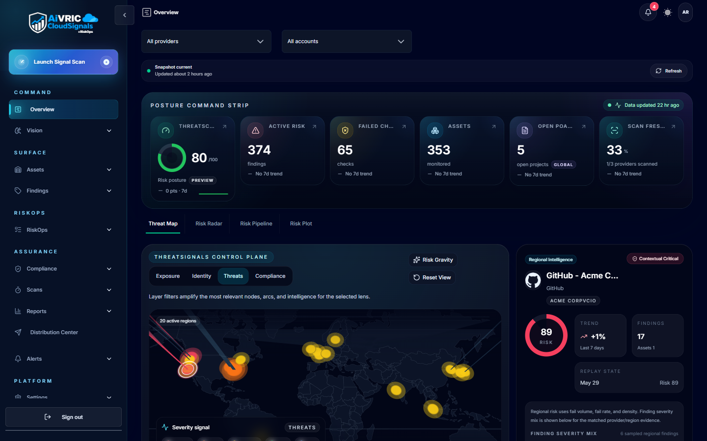
The RiskOps flow model
Risk in CloudSignals travels as a chain of linked objects. Each object in the chain has a specific role: signals flow in one direction, but accountability and closure flow back. Understanding the chain is the prerequisite for everything else.
What makes RiskOps different from traditional risk management
Traditional risk management is periodic: a team does an annual risk assessment, produces a spreadsheet, and revisits it twelve months later. By then, the threat landscape, your cloud estate, and your compliance posture have all changed — often significantly.
RiskOps treats risk as a continuous operational signal, not a static artifact. In practice this means:
- Findings are generated automatically on a 24-hour cadence (or on-demand) as CloudSignals evaluates your connected providers against policy controls.
- Decisions are made continuously — every finding that enters the system should be triaged, not queued indefinitely.
- Governance is operationalized — risk acceptance, treatment approvals, and evidence collection are tracked in the platform, not in email threads or spreadsheets.
Where flow breaks down
RiskOps health degrades at two predictable bottlenecks:
Decision bottleneck
Findings are being discovered faster than they are being dispositioned into treatments or accepted risks. This causes a growing "pending decisions" backlog — a leading indicator that the team's triage process needs structure or capacity.
Mapping bottleneck
Findings and risks lack ownership linkages — no assigned asset owner, no business process connection, no named accountable party. This inflates risk pressure scores and makes prioritization unreliable because severity can't be contextualized against impact.
Asset Inventory
Establish the anchor for every risk signal in your environment.
What assets are
In CloudSignals, assets are the cloud resources, managed services, and configured entities in your connected environment — things like virtual machines, storage buckets, databases, Kubernetes clusters, IAM roles, and repositories. Assets are discovered automatically when you connect a provider; they populate your inventory at /assets.
Assets serve as the technical anchor for the risk chain. When CloudSignals evaluates a policy and finds a misconfiguration, it attaches that finding to the specific resource where the failure occurred. The finding then inherits ownership context from the asset — who owns this resource, which team manages it, what managed entity (business unit, product, environment) it belongs to.
Why asset completeness matters
If a finding can't be linked to a properly-owned asset, it becomes an orphaned signal. Orphaned signals contribute to mapping gaps in your risk pressure score and make it difficult to route findings to the right person for triage. The two most common causes are:
- Missing asset ownership — resources exist in inventory but have no assigned owner or managed entity. This usually happens with legacy accounts or resources spun up outside a formal process.
- Unconnected providers — resources exist in a cloud account that hasn't been connected to CloudSignals yet, so those assets (and their findings) are invisible.
/assets).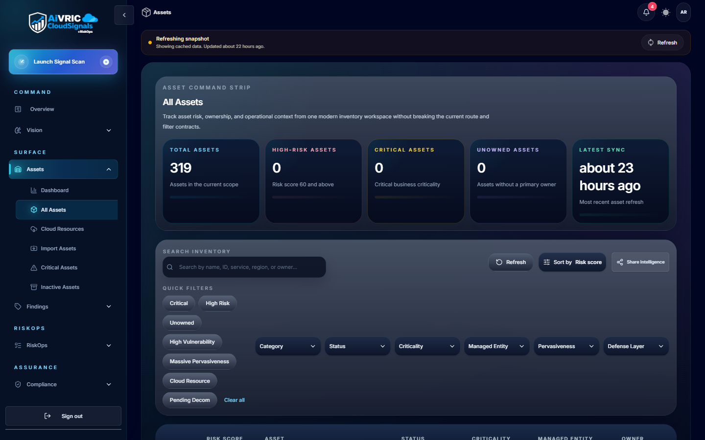
Key actions for this phase
Findings Triage
Convert control failures into risk decisions — not a growing backlog.
What findings are
A finding in CloudSignals is the output of a failed policy evaluation. Each scan compares your connected resources against your active policy controls; when a resource doesn't meet the expected configuration, CloudSignals records a finding. Findings are the primary technical risk signal in the system.
Findings are classified by severity:
| Severity | Meaning | Expected response time |
|---|---|---|
| ● Critical | Immediate, high-confidence exposure — often exploitable without authentication or with broad blast radius (e.g., publicly exposed database, over-privileged IAM with admin on sensitive account). | Same business day |
| ● High | Significant control gap with realistic exploitation path. Requires context-aware triage to confirm impact before remediation. | Within 5 business days |
| ● Medium | Defense-in-depth gap or configuration drift that increases risk but requires chained conditions to exploit. | Within 30 days |
| ● Low | Best-practice deviation or hygiene issue with minimal direct exploitation value. Batch remediation is acceptable. | Next review cycle |
The three triage decisions
Every finding must be dispositioned. There are exactly three valid triage actions:
Remediate
Fix the root cause. The finding is a genuine control failure with a known fix. Create a treatment plan or assign a ticket. Track to closure. This is the preferred outcome for Critical and High findings.
Mitigate
The root cause cannot be fully eliminated right now (technical debt, third-party constraint, migration in-flight). Implement a compensating control that reduces likelihood or impact. Document it as a treatment plan with a target remediation date.
Accept
The residual risk is within your organization's risk appetite — the cost to fix exceeds the benefit, or a business justification makes the current state acceptable. Formal risk acceptance requires: owner, justification, expiry date, and approver. Never use accept as a way to skip triage.
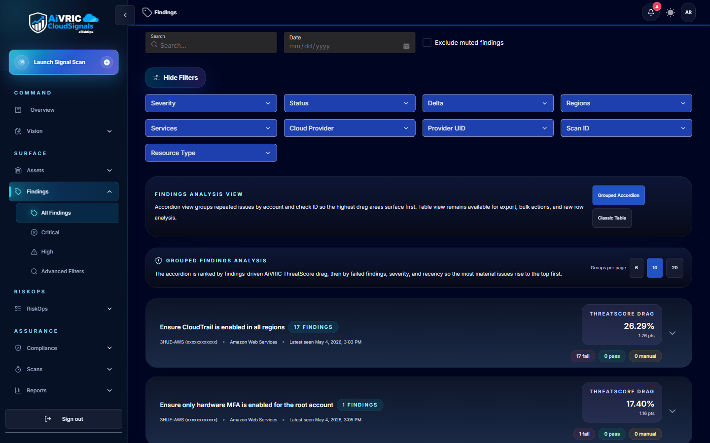
/findings).Key actions for this phase
Business Process Mapping
Connect technical risk signals to the operational outcomes that matter to your organization.
What business processes are in CloudSignals
A business process in CloudSignals is an operational area that your organization depends on — things like "Payment Processing," "Customer Data Platform," "Engineering CI/CD Pipeline," "HR Systems," or "Regulatory Reporting." Business processes give you the impact lens that transforms a technical finding into a business risk statement.
Without this lens, a finding like "S3 bucket has public read access" is a technical observation. With business process mapping, it becomes: "The S3 bucket hosting customer export files for the Customer Data Platform is publicly readable — risk to confidentiality of customer records, potential regulatory exposure under GDPR."
Why mapping gaps inflate risk pressure
Your risk pressure score (expressed as a number from 0–100) is a composite measure that accounts for finding severity, asset criticality, and — critically — mapping completeness. When findings or risks aren't linked to business processes and process owners, the platform treats them as unaccountable exposure. This directly drives up risk pressure, even if the underlying technical risk is relatively low.
Mapping gaps also prevent effective prioritization. You can't triage a finding as "low business impact" if there's no business process linked to assess impact against.
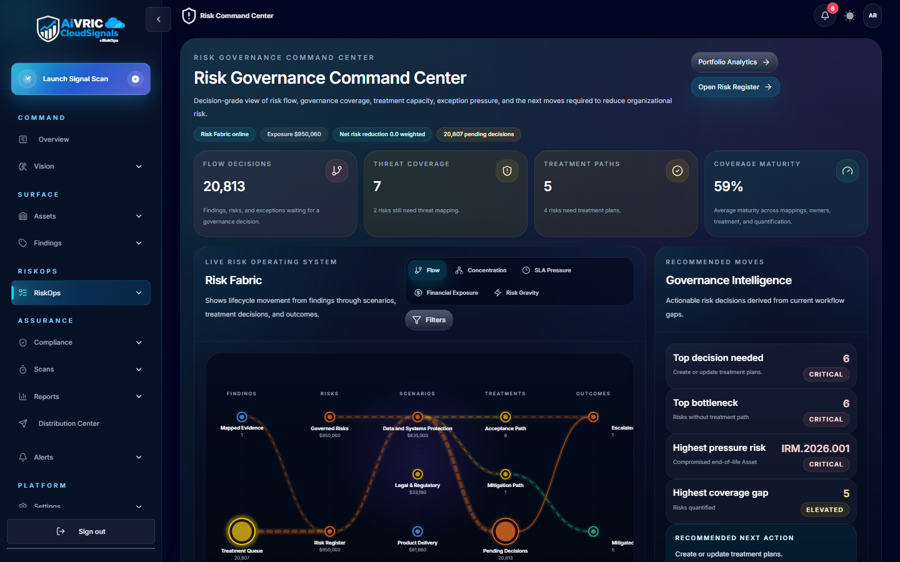
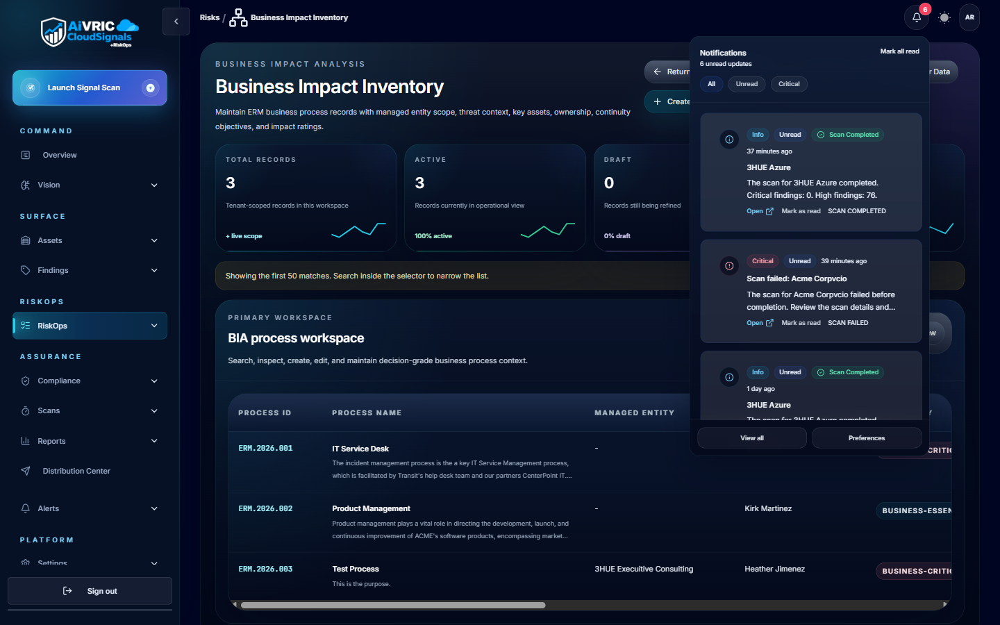
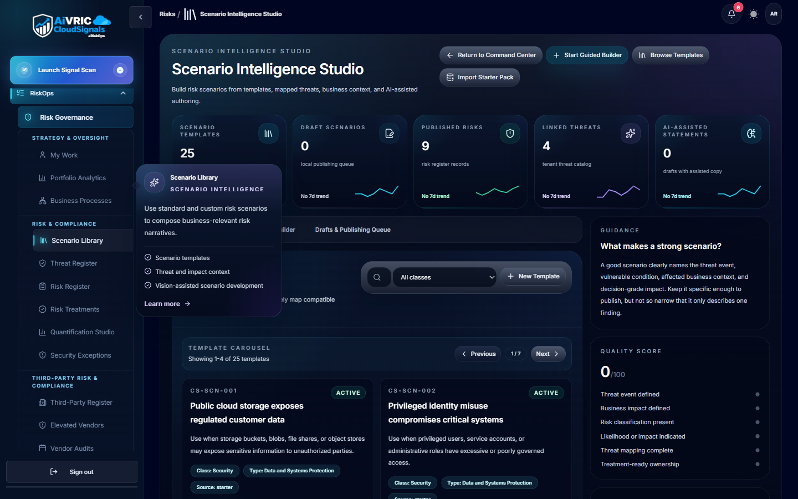
/risks). This is the hub for business process management, risk register, and portfolio exposure.Key actions for this phase
Treatment Planning
Turn risk decisions into tracked, accountable work.
What treatments are
A treatment plan in CloudSignals is the formal record of what your organization is doing about a specific risk or finding. Where findings are passive observations ("this control is failing"), treatments are active commitments ("here is what we're doing, who owns it, by when, and what evidence we'll produce").
Treatments are the bridge between the technical risk layer (findings) and the operational risk layer (governance decisions and audit evidence). Without them, risk decisions exist only in meeting notes or tickets that aren't connected to the risk system of record.
Treatment types
| Type | When to use | What to document |
|---|---|---|
| Remediate | The root cause can and should be fixed. This is the preferred path for Critical and High findings. | Fix description, assigned engineer, target completion date, testing/verification method, linked ticket. |
| Mitigate | Full remediation is blocked (technical constraint, migration in-flight, vendor dependency). A compensating control reduces likelihood or impact in the interim. | Compensating control description, why remediation is deferred, interim risk residual assessment, future remediation target date. |
| Accept | The residual risk is within risk appetite and a business justification exists. Requires explicit approval from a named approver. | Justification statement, named approver, expiry date (must be time-bounded), conditions that would trigger re-evaluation. |
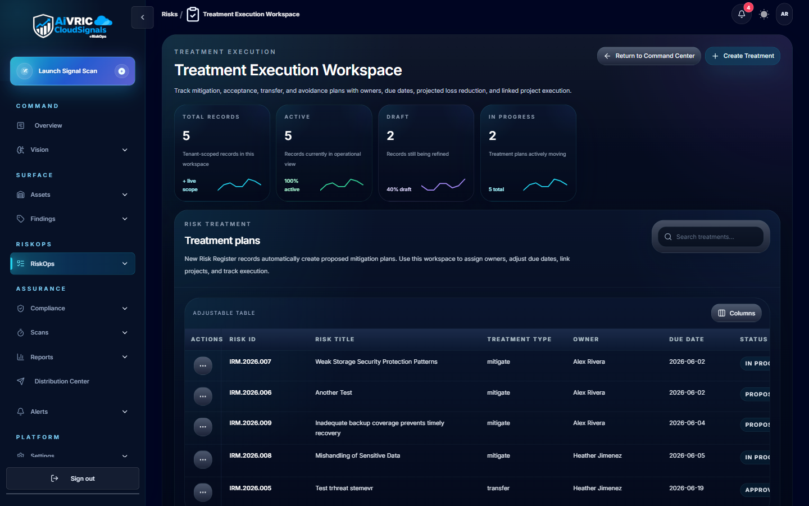
What a good treatment plan includes
- Linked source: The finding(s) or risk register entry this plan addresses
- Assigned owner: A named individual accountable for execution
- Treatment type: Remediate, Mitigate, or Accept
- Description: What specifically will be done (or why acceptance is justified)
- Target date: When the treatment is expected to be complete or next reviewed
- Evidence requirement: What proof of completion will be collected (for auditors)
/risks/treatments).Key actions for this phase
Governance & Closure
Close the decision loop so risk doesn't pool at the approval stage.
What governance decisions are
A governance decision is the formal approval or rejection of a treatment plan by an authorized decision-maker. It is the final step in the RiskOps chain — the moment a risk moves from "being worked" to "formally resolved or accepted."
In CloudSignals, governance decisions surface in the Pending Decisions queue under Treatments. Each pending item represents a treatment plan that has been submitted and is awaiting a formal disposition. This queue is where most RiskOps programs experience their most significant bottleneck — treatment plans are created, but approvals lag.
Decision types
Approve
The treatment plan is accepted as adequate. The risk is now formally governed. Evidence is captured. For remediation plans, the finding will close when the fix is verified. For acceptance plans, the finding is suppressed until the expiry date.
Return for rework
The treatment plan is insufficient — missing information, inadequate controls, or the justification for acceptance doesn't meet policy requirements. The plan is returned to the owner with feedback. This is preferable to rejection; it keeps the work moving.
Reject
The plan is rejected outright — typically used when an acceptance plan violates policy and the only acceptable path is remediation. Rejection creates a new required action and keeps the finding in active status.
Why pending decisions queue up
A large pending decisions backlog is almost always a process problem, not a technical one. Common root causes:
- No named approver: Treatment plans are created but not routed to a decision-maker. Every treatment plan needs a named approver who has been informed of their role.
- Approval authority not defined: The team hasn't established who can approve what. Create a simple matrix: who can approve remediation plans (team lead), who can approve risk acceptance (manager or CISO), and what dollar threshold or severity tier triggers an escalation.
- Approvers not notified: CloudSignals sends notifications — confirm that your approvers have notification rules configured and that alerts aren't routing to a shared inbox that nobody monitors.
- No governance cadence: Approvals should happen on a defined schedule — weekly for remediation plans, monthly for acceptance plans. Without a calendar commitment, approvals are perpetually "not urgent enough."
/risks/treatments). Click the Pending Decisions tab./risks/portfolio). The portfolio exposure figure represents the aggregate financial value of unmitigated, open risk. As treatment plans are approved and remediation progresses, this figure should decrease over time.Key actions for this phase
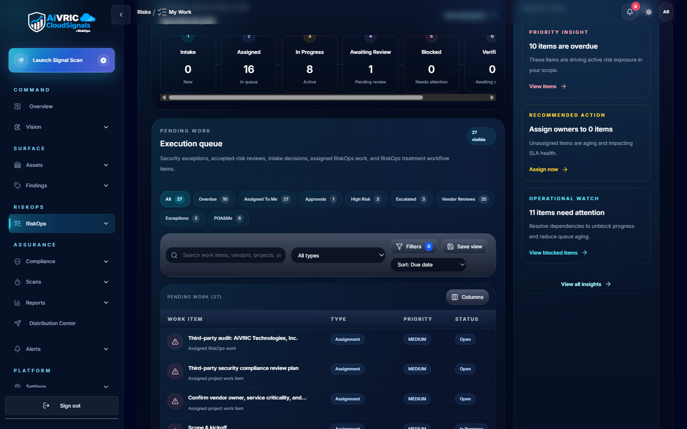
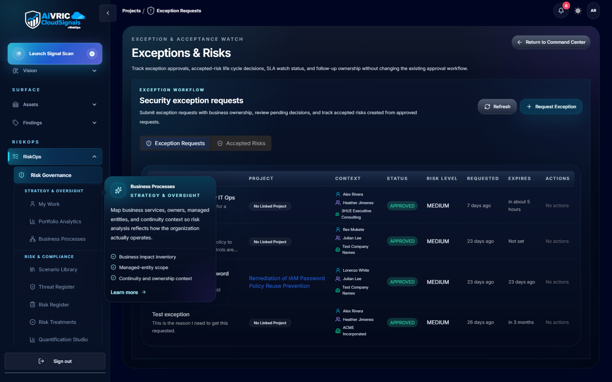
Measuring RiskOps health
Once the end-to-end flow is running, you need metrics that tell you whether the process is healthy — not just whether it's running. The four metrics below are the core KPIs for an operational RiskOps program.
| Metric | What it measures | Target direction | Where to find it |
|---|---|---|---|
| Risk Pressure Score | Composite score (0–100) weighted by finding severity, asset criticality, mapping gaps, and ownership gaps. Higher score = more unmanaged exposure. | Lower over time; 30 or below is a healthy baseline for a mature program. | /risks — Risk Governance summary |
| Pending Decisions | Count of treatment plans awaiting governance approval. A leading indicator of decision bottleneck. | Should trend toward zero after each governance session. Sustained growth indicates a broken approval process. | /risks/treatments — Pending Decisions tab |
| MTTR (Mean Time to Remediate) | Average time from finding creation to verified closure, measured per severity tier and team. | Critical < 7 days; High < 30 days. Watch for teams with outlier MTTR — it's a capacity or process signal. | /risks — Analytics / MTTR view |
| Portfolio Exposure | Aggregate financial exposure of unmitigated open risks, scored and rolled up across all business processes. Used for executive and board reporting. | Should decrease as treatment plans are approved and remediation progresses. | /risks/portfolio |
Interpreting your baseline
When you run RiskOps for the first time, your metrics will look alarming. That's expected — you're seeing the accumulated technical debt that existed before you had visibility. The goal in the first 30 days isn't to have perfect metrics; it's to establish a baseline and demonstrate that the numbers are trending in the right direction.
A weekly decline in pending decisions, a falling risk pressure score, and a reducing MTTR trend are the three signals that prove RiskOps is working — even if the absolute numbers are still high.
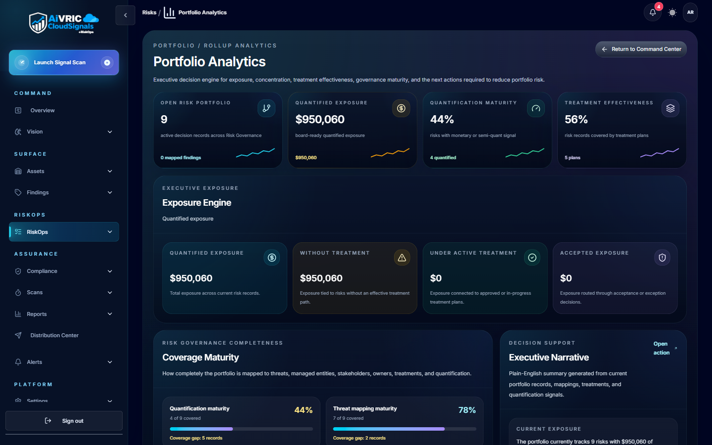
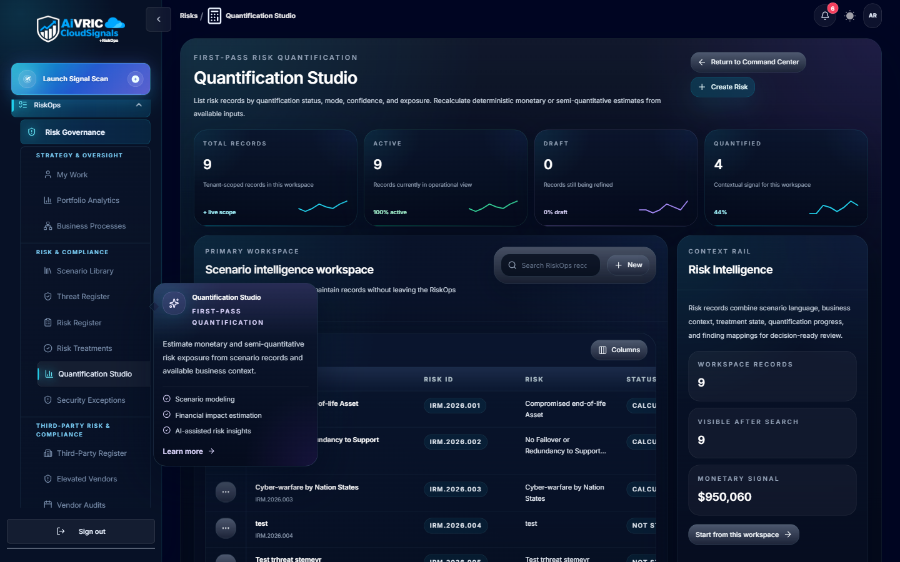
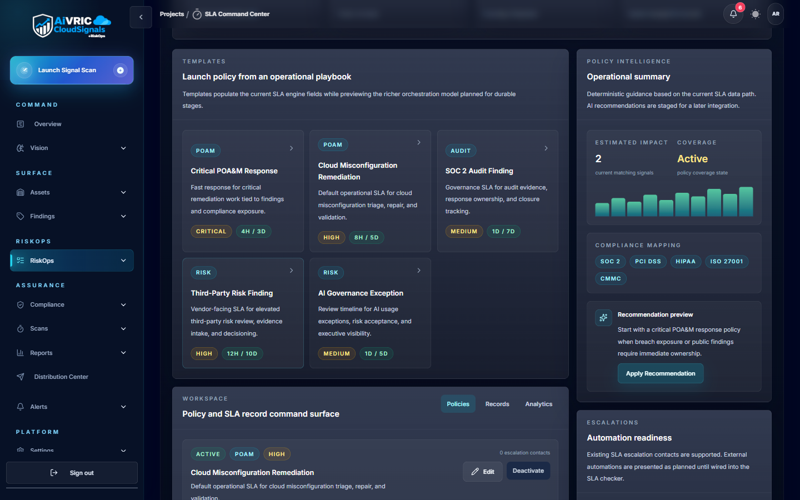
What to do next
Run your first posture report
Generate a posture summary from the Reports panel showing findings by severity, coverage gaps, and trend from your baseline. Share with stakeholders as evidence the program is active.
Evidence exports →Connect your SIEM or ticketing system
Integrate CloudSignals with Splunk, Sentinel, Jira, or ServiceNow to remove manual data-entry from the triage and treatment workflow.
Integrations guide →Map to a compliance framework
Enable SOC 2, ISO 27001, or PCI DSS policy packs. Findings are automatically tagged to controls, and evidence bundles are generated for assessors.
Compliance overview →Expand asset coverage
Add remaining cloud accounts, Kubernetes clusters, and SaaS platforms to your connector configuration. Coverage gaps are the #1 source of unknown risk.
Connector guides →